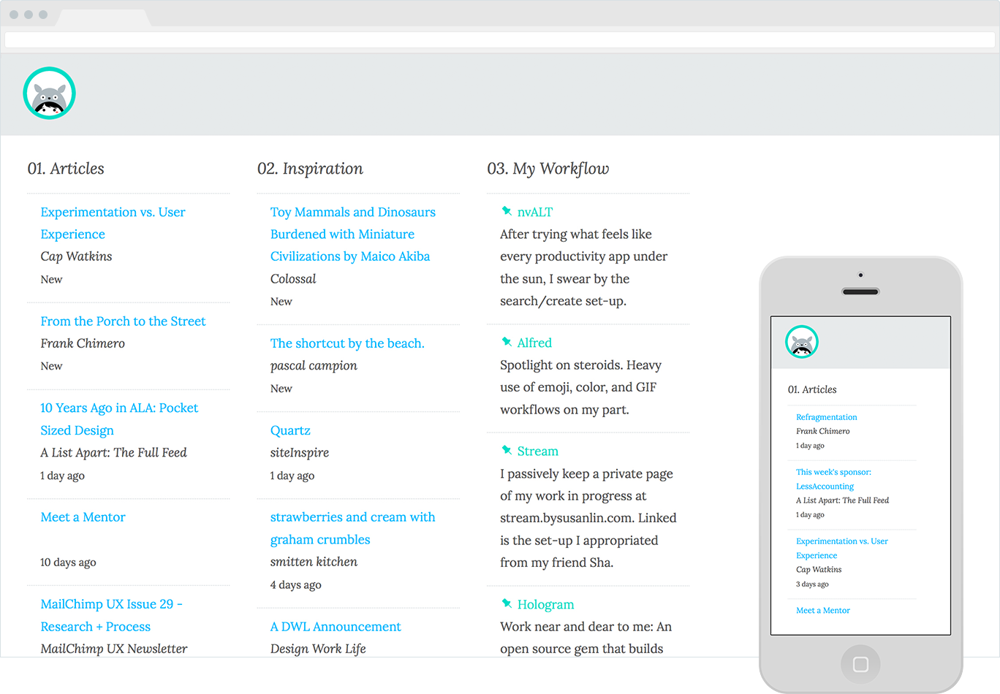
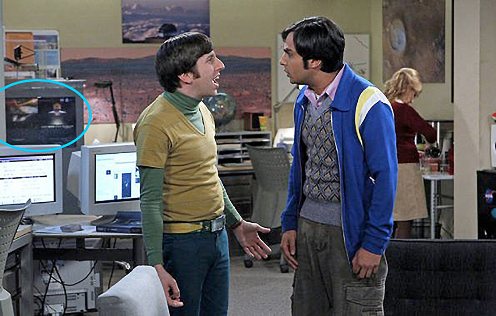

Work
These are some of my favorite things. For a formal work history: PDF resume. For stream of what I'm doing lately: blog.
Design
-
Trulia CSS styleguide. I worked with the core Experience Language team. We decided and created our own internal Bootstrap to address UX and Visual design inconsistencies across our products. The original CSS library was built with Nicole Sullivan and team.
-
Trulia experience design. With the library, it was easy for both developers and designers to prototype pages quickly using OOCSS. The Design to Engineering process radically changed. See my talk about how the process changed.
-
Library.
The Librarian is a site that helps me keep track of the books I own. It is powered by a Google spreadsheet.
-

Daily.
Daily is a stream page of RSS feeds I frequent. It's set as my homepage when starting up my browser. The project was designed from a sketch and then built right in the code.
-
Sociallist. A productivity app inspired by source control. The idea was the provide a beautiful writing experience with the ability to turn any line into an action item.
Articles
- Watercolor slides for design talk Designing while Shipping
- Featured post on Medium The 1000th Cut
-
Public letter writing series
On saying 'Yes!' to everything
Sketchnotes
-
I've been sketchnoting for 3 years. View the archive.
- Sketchnotes featured around the web —
- Accel Partners Blog Accel Design Conf
- Asana Town Hall Skeumorphism vs Simplicity
- Flux Insights 143 Visuals to inspire you to take action
- Sketchnote Army CSSconf & Interaction 2013
Old work that's interesting
-

Awhile back, I interned with NASA. I illustrated art for 2 games Scope it out! and Build It Yourself: Satellite! Print designs were spotted on the set of The Big Bang Theory!
-

I made indie games in college. The best of the bunch was Raincat.
Say hi @bysusanlin. I do not want to join your start-up. I will consider illustration commissions. And remember, I value my time making things over answering emails: bysusanlin at gmail. ❄